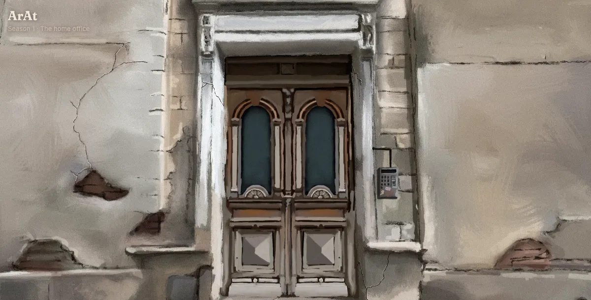

2026 · Web · Art
ArAt
A walkable, hand-painted room on the web, behind an old Budapest door with a code keypad. Every object inside is made by a real artist, and one click takes the visitor to them. I paint the room, design the experience and build the site with coding agents.
Visit ArAt →